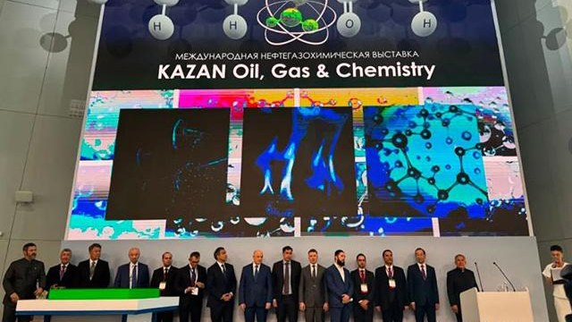

2026.08
诚邀莅临 Tat Oil Expo-2026(俄罗斯喀山)· E5-3 展位Join Us at Tat Oil Expo-2026, Kazan — Booth E5-3Приглашаем на Tat Oil Expo-2026, Казань — стенд E5-3
2026 年 8 月 26–28 日 · 俄罗斯喀山 · E5-3 展位 —— KST POWER,值得信赖的动力解决方案品牌。Aug 26–28, 2026 · Kazan, Russia · Booth E5-3 — KST POWER, a trust name in power solutions.26–28 августа 2026 г. · Казань, Россия · стенд E5-3 — KST POWER, надёжное имя в области силовых решений.

诚邀莅临 2026 年 8 月 26–28 日于俄罗斯喀山举行的 Tat Oil Expo-2026,KST POWER 展位号 E5-3,现场呈现面向油气与矿山的成套动力方案。Join us at Tat Oil Expo-2026 in Kazan, Russia, Aug 26–28, 2026. Find KST POWER at Booth E5-3, presenting complete power solutions for oil, gas and mining.Приглашаем на Tat Oil Expo-2026 в Казани, Россия, 26–28 августа 2026 г. Стенд KST POWER — E5-3, комплексные силовые решения для нефти, газа и горной добычи.
现场将展示面向油田、钻井与矿山的柴油发电机组及成套动力方案,欢迎俄罗斯与中亚客户前来洽谈配套动力项目。KST POWER will showcase diesel gensets and complete power packages for oilfield, drilling and mining applications, and welcomes matched-power project discussions with customers across Russia and Central Asia.На стенде будут представлены дизельные генераторные установки и комплектные энергетические решения для нефтепромысловых, буровых и горнодобывающих применений; приглашаем заказчиков из России и Центральной Азии к обсуждению проектов по подбору силовых установок.
← 返回活动与新闻← Back to Activity & News← Назад к событиям и новостям